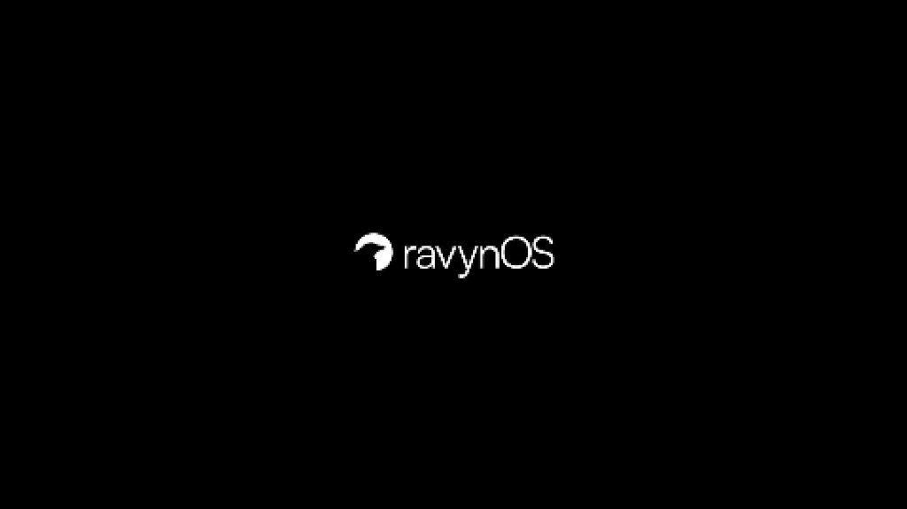
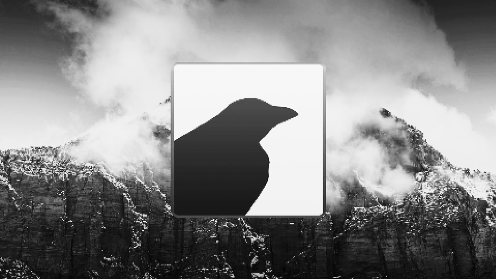
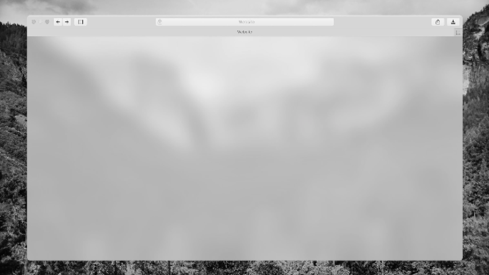

PROJECT / 03 / RAVYNOS
ravynOS
An OS made to run Mac apps on any device.

Mission Statement
ravynOS is an open-source operating system aiming to provide a macOS-like experience and compatibility on standard PC hardware. It seeks to bridge the gap between elegant design and flexible, open architecture.
Images


